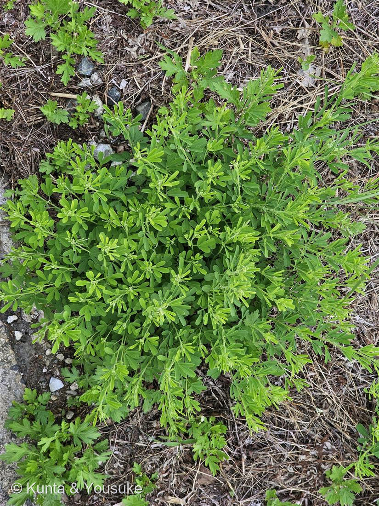

地図を読み込んでいるよ…
🔍 写真も地図も、押しているあいだ拡大して見られるよ（スマホは指を置いてすこし待ってね）。
🌍 の地図＝この子がもともと自生している場所を緑に。西アジア〜地中海地域（古代メディア＝現在のイラン北西部）。
Medicago ＝古代のメディア（いまのイラン北西部）。地図の東のはしが、名前の場所だよ。
⚠ 地図は国（日本と中国だけ県・省）までしか塗れないから、ほんとうの分布より広く見えていることがあるよ。地図はだいたいの場所。正確なところは、上の文を見てね。
アルファルファ（ムラサキウマゴヤシ／紫馬肥やし）
Medicago sativa L.
英名 · alfalfa／lucerne ／ sativa ＝ ラテン語で「栽培される」
マメ科 · Fabaceae（ウマゴヤシ属 Medicago）
燻太さんの記憶と観察「マメ科の植物。刈り込まれても元気に繁っているよ」……その「刈られても元気」こそ、この草の正体そのものだった。
「マメ科」── その記憶、当たってる
- 三出複葉（三つ葉）で、小葉は倒卵形（先が広い）＋先端にだけ細かい鋸歯。
- 真ん中の小葉に柄があるのが、007 シロツメクサ（小葉が柄なし＝シャジクソウ属）との見分け。この子はウマゴヤシ属。
- 図鑑では 007 シロツメクサ・009 オジギソウ に続く、マメ科3種目。
- ⚠花がまだ咲いていないので、確定はウマゴヤシ属（Medicago）まで。大きく茂る株姿・倒卵形の小葉・刈られて再生する性質から、アルファルファ（M. sativa）が本命。決め手は花の色——紫〜青紫ならアルファルファ／黄色なら別種（コメツブウマゴヤシ等）。次に咲いていたら答え合わせ。
⭐ 「メドハギの若い株では？」── 良い問い。でも葉が答える
- 刈られても平気な道ばたの三出マメ科、というくくりでは メドハギ（Lespedeza cuneata・ハギ属） も有力候補。まっとうな疑い。でも、葉を拡大すると3点で合わない：
- ① 小葉の幅：メドハギは幅2〜4mmの細い楔形（短冊）／この株は幅の広い倒卵形（へら形）。
- ② 頂小葉の柄：メドハギは3小葉がほぼ無柄で密につく／この株は真ん中の小葉が明らかに長い柄の先に立つ（＝ウマゴヤシ属の印で、ハギ属にはない）。
- ③ 毛：メドハギは葉裏・茎に銀白色の伏毛／この株は緑で、目立つ伏毛なし。
- ⭐いちばん効くのは「頂小葉の長い柄」＋「幅広の倒卵形」。この2つを見たら、ハギ属でなくウマゴヤシ属に寄せる。——見分けの物差しが、ひとつ増えた（燻太さんの問いのおかげ）。
⭐⭐ 「刈り込まれても元気」── それが、世界一の牧草になった理由
- アルファルファは、世界でもっとも重要な牧草。なぜか＝刈られても、刈られても、また生えてくるから。
- 地下に、6mを超えることもある深い直根（タップルート）を張り、そこに栄養（炭水化物と窒素）を蓄える。
- 地際に クラウン（crown） という株の“芽の工場”があり、刈り取られるたびに、そこの芽から新しい茎が伸びる。
- だから 1シーズンに3〜4回、いやもっと刈れる。刈るほど、根とクラウンの貯金を使って、また茂る。
- ⭐燻太さんが見た「刈り込まれても元気」は、まさにこの仕組みが目の前で起きている姿。
- ⭐047 ダリアの「地下の貯金」と同じ発想。でも使い道が逆——ダリアは“春の起動”に使い、アルファルファは“刈られた後の再起動”に使う。
⭐⭐⭐ マメ科の魔法 ── 空気から肥料を作る
- 根に 根粒（nodule） を作り、その中に 根粒菌（アルファルファの相棒は Sinorhizobium meliloti）を住まわせる。
- 菌は、空気中の窒素ガスを、植物が使えるアンモニアに変える。植物は、かわりに菌へ糖を渡す。空気を肥料に変える、生き物どうしの取引。
- だからアルファルファを植えた畑は、土が肥える（次の作物の窒素肥料を、1haあたり100kgぶんも供給できる）。「馬を肥やす」だけでなく「土も肥やす」草。
- ⚠面白い事実：刈り取ると、24時間以内に窒素固定の力が88%も落ちる（葉を失って糖を送れなくなるから）。でも18日ほどで元に戻る。地上を刈られると、地下の菌との取引も一時停止し、また再開する——地上と地下が、連動している。
- → 007 シロツメクサ・009 オジギソウも同じマメ科＝同じ「根粒菌と手を組む」仲間。クローバーが「土を肥やす緑肥」に使われるのも、これ。
遺伝学の話 ── 現場の王様と、実験室の教科書
学名の由来と、この植物のこと
- Medicago＝古代の地方名 「メディア（Media）」に由来。古代ペルシャ（メディア王国＝いまのイラン北西部）から、ペルシャ戦争のころにギリシャへ渡ってきた牧草なので「メディアの草」。
→ 人の名前じゃなく、“土地の名前”をもらった花（045ら「人名」の小道とは、ひとつ違う縁）。 - sativa＝「栽培される」。人が育ててきた印。
- アルファルファ（alfalfa）＝アラビア語 al-faṣfaṣa（＝「最良の飼料」）から。ヨーロッパでは ルーサン（lucerne）。
- 和名 ムラサキウマゴヤシ（紫馬肥やし）＝「紫の花をつける、馬を肥やす草」。名前がもう、用途を語っている。
- スプラウト（芽ばえ）は食用にもなる（アルファルファもやし）。もとは西アジア〜地中海の乾いた土地の植物で、日本では道ばたや河原に野生化している。